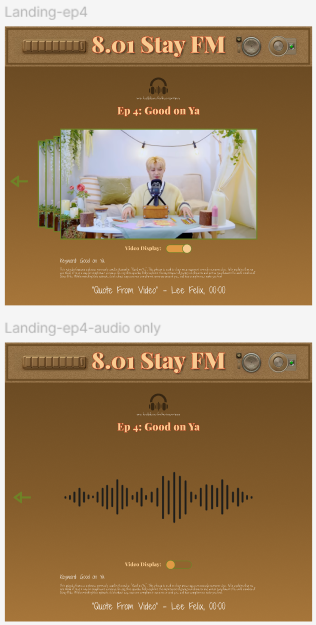

This web application was designed to create a warm, cozy environment for the viewers of "Stay FM" (content created by Lee Felix of Stray Kids) to enjoy the videos.
Lee Felix is a member of boyband Stray Kids. In 2020, he created a segment ‘Stay FM.’ to teach his fans common Australian phrases in the form of ASMR. This segment includes four videos with over 2 Million views each.
With these videos having been created 4 years ago, it is difficult for fans of the section to find them. There is no official playlist for Stay F.M., causing the segment to be buried under the rest of Stray Kids’ videos over the years. I want to design a website centered on Stay F.M. that will provide users with quick and easy access to Stay F.M. videos and highlight the Australian phrases mentioned in each video
I conducted my research through comment sections under the videos as well as social media posts about the episodes. With this research I will gain a better understanding of the target audience and elements of the segment that stood out to the audience that I may encorporate into the design.
The audience for this content spans from teenagers to adults, majority of the audience being Young Adults. Within each episode I was able to find common threads of things the audience liked and disliked about the videos, why they watched them, and the feeling they got from watching them.
Fans enjoyed the relaxing and calm aspect of the ASMR videos. Viewers noted how Felix’s voice helped to soothe them while others noted that his warm smile and enjoyment was their favorite part. However, in 50% of the videos, viewers commented on how the captions would say “music” or “applauding” while Felix was either speaking or creating ASMR sounds. With this in mind, I wanted to add a feature where users can choose between watching the Stay F.M. video or listening to the audio without the visual component. This would eliminate distraction caused by captions and satisfy users that want to focus on his voice as well as users that want to watch his video. Lastly, viewers commented on quotes from the video that they enjoyed. This is a nice addition to give the design a warm feel.
I also found that many viewers watched this video content after a hard day, finding comfort in sitting down and relaxing with Felix for a few moments. Additionally, viewers watched directly before getting ready for bed or falling asleep. Roughly 40% of comments mentioned the warm feeling they received from watching these videos. I strove to portray the warm and comfortable feeling from each episode with a warm color palette. I also kept the UI simple, using few controls to ensure that users that are ready to fall asleep have easy usability.
The reference photos identify the warm feeling I want to capture throughout the website. I will be using the Brown, Green, and Orange as the website’s primary colors while the red, lighter brown, and tan will be used as secondary colors.
Header 1 is in the font Playfair Display, Black, at size 24. This font is similar to the font in the video that displays the segment title “8.01 Stay FM”, making it my number one choice for header 1. Header 2 is Shadows Into Light Two, Regular, at size 16. This font being similar to handwriting kept the comforting and relaxing feeling that viewers enjoyed from the videos. Lastly, the body is Pompiere, Regular, at size 12. This font is similar to header 2 in the handwriting style.
This header was created using Adobe photoshop. It has a radio theme and uses the Brown primary color as well as red and tan secondary colors.
The overall design of the website uses warm colors like brown and green to emphasize the comforting feeling of the videos.
The user has the option to toggle the video display. When the video is toggled off, the audio continues at the same point in the video.

Each page for the episode includes a short description, telling the user the keyword of the episode, the contents (reading, eating sweets, etc), and gives the user something to think about that is related to the episode. This creates a connection between the user and the content.
This project helped me practice a new form of user research through social media. It was interesting to use comments and posts from common social media apps and translate those ideas into features on a website. The project also gave me an opportunity to improve my skills with adobe photoshop and prototyping with Figma.